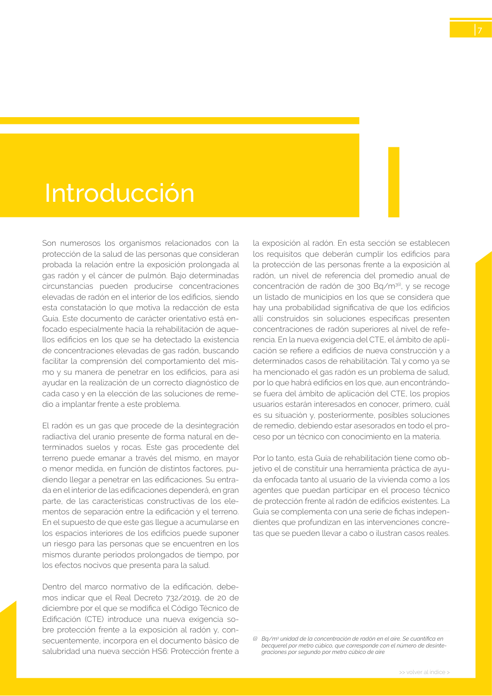
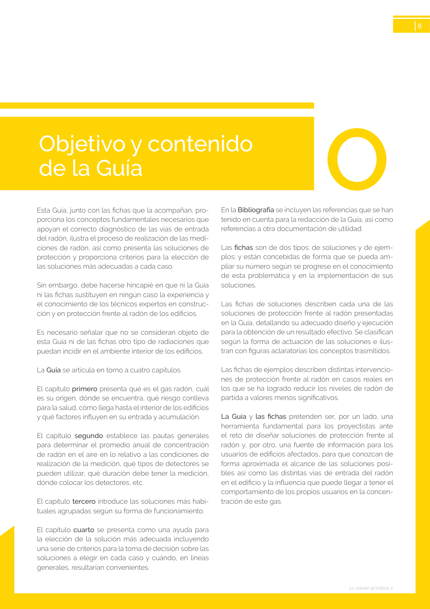

<!doctype html>
<html lang="es"><head><meta charset="utf-8">
<meta name="viewport" content="width=device-width, initial-scale=1">
<title>GUIA · Introducción</title><link rel="stylesheet" href="../estilo.css">
</head><body>
<nav><a href="../index.html">Índice</a> › <a href="../doc/guia-pdf-f3314b0414fe-sin-fecha-e58e54b822cf.html">GUIA</a> › a0010</nav>

<header class="meta">
<p><a href="../doc/guia-pdf-f3314b0414fe-sin-fecha-e58e54b822cf.html">GUIA</a> · Introducción · versión sin-fecha · capa guia</p>
</header>
<div class="cita"><strong>Cita:</strong> GUIA · ID técnico a0010 · Introducción · páginas físicas pág. 7-8 (impresas: ['7', '8'])</div>
<p>Formatos: <a href="../../contenido/docs/GUIA-PDF-f3314b0414fe/sin-fecha__e58e54b822cf/apartado/a0010__introduccion.json">JSON compacto</a> · <a href="../../contenido/docs/GUIA-PDF-f3314b0414fe/sin-fecha__e58e54b822cf/apartado/a0010__introduccion.md">Markdown</a> · <a href="../../contenido/docs/GUIA-PDF-f3314b0414fe/sin-fecha__e58e54b822cf/fuente.pdf">PDF fuente</a></p>
<p><a href="../doc/guia-pdf-f3314b0414fe-sin-fecha-e58e54b822cf.html">Ámbito del documento</a> · <a href="../doc/guia-pdf-f3314b0414fe-sin-fecha-e58e54b822cf.html#ambito">texto del ámbito</a> ·
<a href="../doc/guia-pdf-f3314b0414fe-sin-fecha-e58e54b822cf.html">documento y tablas</a></p>
<nav><a href="guia-pdf-f3314b0414fe-sin-fecha-e58e54b822cf__a0009.html">← Prólogo P</a> <a href="guia-pdf-f3314b0414fe-sin-fecha-e58e54b822cf__a0011.html">Objetivo y contenido de la Guía →</a></nav>
<h1>Introducción</h1>
<p>Tipo: tablas, figuras · nivel 1 · sección estimada: Introducción · padre: </p>
<pre class="literal">Introducción
(i)   Bq/m3 unidad de la concentración de radón en el aire. Se cuantifica en
becquerel por metro cúbico, que corresponde con el número de desinte­
graciones por segundo por metro cúbico de aire

&gt;&gt; volver al índice &gt;
8
Esta Guía, junto con las fichas que la acompañan, pro­
porciona los conceptos fundamentales necesarios que
apoyan el correcto diagnóstico de las vías de entrada
del radón, ilustra el proceso de realización de las medi­
ciones de radón, así como presenta las soluciones de
protección y proporciona criterios para la elección de
las soluciones más adecuadas a cada caso.
Sin embargo, debe hacerse hincapié en que ni la Guía
ni las fichas sustituyen en ningún caso la experiencia y
el conocimiento de los técnicos expertos en construc­
ción y en protección frente al radón de los edificios.
Es necesario señalar que no se consideran objeto de
esta Guía ni de las fichas otro tipo de radiaciones que
puedan incidir en el ambiente interior de los edificios.
La Guía se articula en torno a cuatro capítulos.
El capítulo primero presenta qué es el gas radón, cuál
es su origen, dónde se encuentra, qué riesgo conlleva
para la salud, cómo llega hasta el interior de los edificios
y qué factores influyen en su entrada y acumulación.
El capítulo segundo establece las pautas generales
para determinar el promedio anual de concentración
de radón en el aire en lo relativo a las condiciones de
realización de la medición, qué tipos de detectores se
pueden utilizar, qué duración debe tener la medición,
dónde colocar los detectores, etc.
El capítulo tercero introduce las soluciones más habi­
tuales agrupadas según su forma de funcionamiento.
El capítulo cuarto se presenta como una ayuda para
la elección de la solución más adecuada incluyendo
una serie de criterios para la toma de decisión sobre las
soluciones a elegir en cada caso y cuándo, en líneas
generales, resultarían convenientes.
En la Bibliografía se incluyen las referencias que se han
tenido en cuenta para la redacción de la Guía, así como
referencias a otra documentación de utilidad.
Las fichas son de dos tipos: de soluciones y de ejem­
plos; y están concebidas de forma que se pueda am­
pliar su número según se progrese en el conocimiento
de esta problemática y en la implementación de sus
soluciones.
Las fichas de soluciones describen cada una de las
soluciones de protección frente al radón presentadas
en la Guía, detallando su adecuado diseño y ejecución
para la obtención de un resultado efectivo. Se clasifican
según la forma de actuación de las soluciones e ilus­
tran con figuras aclaratorias los conceptos trasmitidos.
Las fichas de ejemplos describen distintas intervencio­
nes de protección frente al radón en casos reales en
los que se ha logrado reducir los niveles de radón de
partida a valores menos significativos.
La Guía y las fichas pretenden ser, por un lado, una
herramienta fundamental para los proyectistas ante
el reto de diseñar soluciones de protección frente al
radón y, por otro, una fuente de información para los
usuarios de edificios afectados, para que conozcan de
forma aproximada el alcance de las soluciones posi­
bles así como las distintas vías de entrada del radón
en el edificio y la influencia que puede llegar a tener el
comportamiento de los propios usuarios en la concen­
tración de este gas.</pre>
<h2>Tablas en estas páginas</h2><ul><li>p. 7 · <a href="../../contenido/docs/GUIA-PDF-f3314b0414fe/sin-fecha__e58e54b822cf/tabla/p0007_t01.json">p0007_t01.json</a> · <a href="../../contenido/docs/GUIA-PDF-f3314b0414fe/sin-fecha__e58e54b822cf/tabla/p0007_t01.csv">.csv</a></li><li>p. 8 · <a href="../../contenido/docs/GUIA-PDF-f3314b0414fe/sin-fecha__e58e54b822cf/tabla/p0008_t01.json">p0008_t01.json</a> · <a href="../../contenido/docs/GUIA-PDF-f3314b0414fe/sin-fecha__e58e54b822cf/tabla/p0008_t01.csv">.csv</a></li></ul><h2>Página visual</h2><figure><a href="../../contenido/docs/GUIA-PDF-f3314b0414fe/sin-fecha__e58e54b822cf/figura/p0007.png"></a><figcaption>Página visual 7 (fuente para fórmulas/tablas/figuras)</figcaption></figure><figure><a href="../../contenido/docs/GUIA-PDF-f3314b0414fe/sin-fecha__e58e54b822cf/figura/p0008.png"></a><figcaption>Página visual 8 (fuente para fórmulas/tablas/figuras)</figcaption></figure><p class="aviso">PDF fuente redistribuible: copia fiel enlazada en esta página (SHA256 verificado).</p>
<footer>Generado estáticamente desde JSON normalizado; sin JavaScript ni servicios externos.
El JSON es la fuente; este HTML es caché reproducible.</footer>
</body></html>
